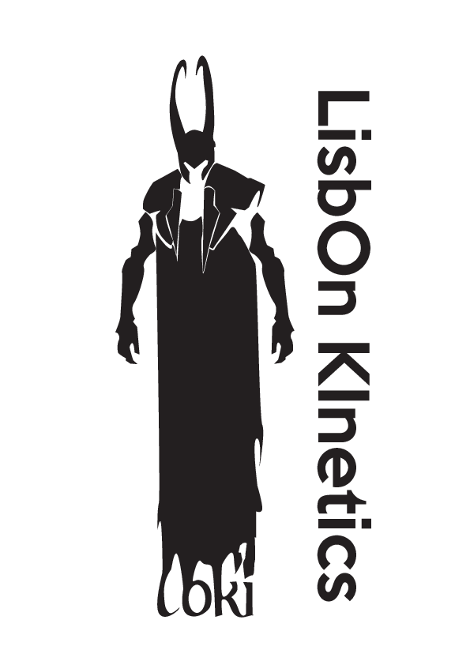

The LisbOn KInetics Global Model User Guide
Current version: LoKI_26.07
2Departamento de Física, Facultad de Ciencias, Universidad de Córdoba, Campus de Rabanales, Spain
email: loki@tecnico.ulisboa.pt
 |
The following is the user guide of the LisbOn KInetics Global Model (LoKI-GM) simulation tool, intended to model non-equilibrium low-temperature plasmas (LTPs), produced from different gases or gas mixtures under a wide range of working conditions. LoKI-GM comprises two modules, that can run self-consistently coupled or as standalone tools:
LoKI-GM leverages on the scientific heritage in the field of non-equilibrium plasma kinetics of the Portuguese group N-Plasmas Reactive: Modeling and Engineering, N-PRiME [3] of Instituto de Plasmas e Fusão Nuclear with Instituto Superior Técnico, and it was developed resorting to well-grounded scientific foundations established years ago [4, 5]. Several numerical improvements and updates have recently been implemented in LoKI-GM, and further developments are ongoing, as part of a fruitful collaboration with the Departamento de Física of Facultad de Ciencias with Universidad de Córdoba (regarding LoKI-C) and the group Elementary Processes in Gas Discharges, EPG [6] of the Eindhoven University of Technology (regarding LoKI-B). |
The LisbOn KInetics Global Model is an open-source tool, licensed under the GNU general public license, and developed with an ontology that prioritizes the clear separation between tool and data. Its implementation follows a flexible and extensible object-oriented design, using the following programming languages:
- MATLAB [7] for LoKI-B and LoKI-C, leveraging its matrix-based architecture;
- C++ [8] for LoKI-B++, taking advantage of the higher performance of a compiled language, and linked with Eigen [9], a C++ template library for linear algebra.
LoKI-B++ is a C++ counterpart of MATLAB's LoKI-B, replicating essentially all of its original features. Unless otherwise speci ed, the acronym LoKI-B in this guide refers to either version of the code. For simplicity, and unless otherwise specified, the acronym LoKI in this guide refers to the code LoKI-GM.
LoKI-B, LoKI-B++ and LoKI-C are part of the LoKI tool suite and are freely available at Github/LoKI-Suite, for users to perform LTP simulations, and for modellers / developers who are invited to continue testing the tool and/or to contribute for its development and improvement.
Contents
- Introduction
- 1.1. General features
- 1.2. This user guide
- 1.3. How to contact us
- 1.4. How to reference the code
- 1.5. Acknowledgments
1. Introduction
Overall, LoKI-GM provides the combined chemical and transport description of plasma charged/neutral species, both in volume and surface phases, for user-defined working conditions: mixture compositions, pressure, dimensions and excitation features (glow (DC/HF), post-discharge, pulsed).
1.1. General features
LoKI-GM comprises two modules, that can run self-consistently coupled or as standalone tools:
- a Boltzmann solver (LoKI-B) for the electron Boltzmann equation [1, 2];
- a Chemical solver (LoKI-C) for the global kinetic model(s) of pure gases or gas mixtures.
LoKI-B solves the space independent form of the two-term electron Boltzmann equation (EBE) to calculate the isotropic and the anisotropic parts of the electron distribution function (the former usually termed the electron energy distribution function, EEDF), and the associated electron macroscopic parameters. LoKI-B applies to non-magnetised non-equilibrium LTPs, excited by DC/HF electric fields or time-dependent (non-oscillatory) electric fields (a new feature introduced in LoKI-B_v2.0.0, when LoKI-B runs independently) [2] from different gases or gas mixtures. The tool uses a stationary description for DC fields, a Fourier time-expansion description for HF fields, and a time-dependent description for time-varying fields.
LoKI-B was developed as a response to the need of having an electron Boltzmann solver easily addressing the simulation of the electron kinetics in any complex gas mixture (of atomic / molecular species), describing first and second-kind electron collisions with any target state (electronic, vibrational and rotational), characterized by any user-prescribed population. LoKI-B includes electron-electron collisions, it handles rotational collisions adopting either a discrete formulation or a more convenient continuous approximation, and it accounts for variations in the electron populaton caused by non-conservative events (ionisation and attachment) by adopting either a space-homogeneous exponential temporal growth or a time-constant exponential spatial growth of the electron density.
LoKI-C solves the system of zero-dimensional (volume average) rate balance equations for the most relevant charged and neutral species in the plasma, receiving as input data the kinetic schemes for the gas/plasma system under study via an intuitive parser-file, and giving as output the particle densities of the different gas/plasma species. LoKI-C uses several modules to describe the mechanisms (collisional, radiative and transport) controlling the creation / destruction of species, namely various transport models for the charged particles (ambipolar diffusion, effective diffusion, and Liberman and Lee's low-pressure model) and for the neutral particles (multi-component diffusion of species following Wilke's approach, and considering wall recombination). LoKI-C includes also a gas/plasma thermal model, for the self-consistent calculation of the gas temperature, and supports multi-component mean-field microkinetic mesoscopic models to handle surface kinetics in a fully coupled way with volume kinetics.
The class of problem addressed by LoKI-GM, the physical models and the algorithms used are discribed in the Reference Manual [11].
1.2. This user guide
The distribution of LoKI-GM includes MATLAB® *.m files together with data files required to define the problem under study and the physical properties of the gases.
This user guide begins with essential information for quickly obtaining and running LoKI-GM (see Section 2). It then describes the files included in the LoKI-GM distribution, provides guidance on preparing the input file, and explains how the output data are structured.
The main components of the distribution are summarized below.
- The Setup file (see Section 3) is the main input to LoKI-GM and serves as the primary user interface (UI) for interacting with the code. It contains the specification of the Working conditions (see Section 3.1), the configuration of the Electron kinetics (see section 3.2) and the Chemistry (see section 3.3), including numerical settings. It also defines the data displayed in the Graphical user interface (see section 3.4) and the information written to the Output files (see section 3.5). Setup files can be written either in plain text or JSON format.
- Auxiliary input files (see section 4) provide the
fundamental data required to run the simulations. These files are organized into three categories:
- LXCat files (see section 4.1), which contain electron-scattering cross sections;
- Property files (see section 4.2), which define the properties of gases and their states;
- Chemistry files (see section 4.3), which list the electron and heavy-species reactions that compose a kinetic mechanism.
- Auxiliary functions (see section 5) are MATLAB®
*.m functions used internally by LoKI-GM to perform the simulations. They are organized into:
- Property functions (see section 5.1), which define the properties of gases and states;
- Rate coefficient functions (see section 5.2), which compute the rate coefficients of reactions included in the kinetic mechanism;
- Other auxiliary functions (see section 5.3), which provide additional utilities, including tools to calculate working conditions that may evolve during the simulations.
- Utilities (see section 5.4) which contains several scripts to support the pre- and post-processing of data used by LoKI-GM, including tools to modify of LXCat text files, plot two different EEDFs on the same MATLAB® graph, or plot the errors associated with the convergence cycles.
An HTML version of this user guide is currently under development. The corresponding files are located in the folder [repository folder]/LoKI-GM_26.07/Documentation/html/ and can be accessed directly by opening the page The_setup_file.html.
The HTML documentation can also be accessed from the GUI-based input through the Help button (see section 2.4) or from the MATLAB&ref; using the command
web("../Documentation/html/The_setup_file.html", "-browser")
which opens the corresponding page in the system's default web browser.
1.3. How to contact us
After downloading and installing LoKI-GM, and especially if you intend to interact with us, you are invited to send a short message to loki@tecnico.ulisboa.pt with subject LoKI-GM, just giving your name and affiliation.
Also, you are much welcome to report any problem or bug you may find using the code, or to send any feedback with suggestions for further developments.
1.4. How to reference the code
LoKI-GM is the result of the efforts of the Portuguese group N-Plasmas Reactive: Modeling and Engineering (N-PRiME) of Instituto de Plasmas e Fusão Nuclear with Instituto Superior Técnico, the Departamento de Física of Facultad de Ciencias with Universidad de Córdoba and the group Elementary Processes in Gas Discharges (EPG) of the Eindhoven University of Technology. These groups decided to share the outcome of its research on code development with the members of the Low-Temperature Plasmas community.
When using LoKI-B in your work, please give proper credits to the main developers, by adding the following citations:
- Tejero A et al "The LisbOn KInetics Boltzmann solver" 2019 Plasma Sources Sci. Technol. 28 043001.
- Tejero A et al "On the quasi-stationary approach to solve the electron Boltzmann equation in pulsed plasmas" 2021 Plasma Sources Sci. Technol. 30 065008.
- Alves L L et al LoKI-GM: a global model tool for plasma chemistry studies 2026 Plasma Sources Sci. Technol., in preparation.
1.5. Acknowledgments
This work was funded by Portuguese FCT - Fundação para a Ciência e a Tecnologia, initially under projects PTDC/FISPLA/1243/2014 (KIT-PLASMEBA), and currently under projects PSI.COM, UID/50010/2025, UID/PRR/50010/2025, UID/PRR2/50010/2025 and LA/P/0061/2020. Part of this work is supported by the Dutch Science Foundation NWO, and by ASML. We also thank D Boer and J van Dijk (Department of Applied Physics and Science Education, Eindhoven University of Technology, The Netherlands) for helpful suggestions in producing this guide.